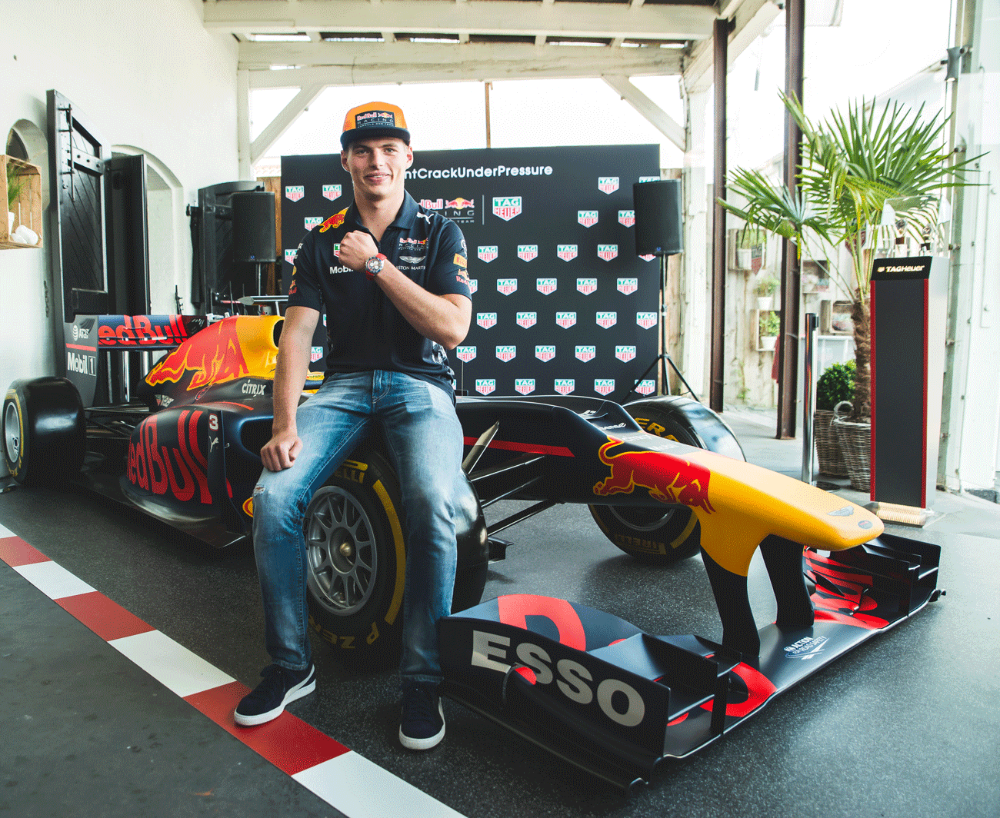

| Menu | ||||
| Voorpagina | Geschiedenis | Max Verstappen | Quizz | Contact |
Max Verstappen (geb. 1997) is een Formule 1-coureur die een Nederlandse en Belgische nationaliteit heeft, maar rijdt onder de Nederlandse vlag. Max is 19 jaar. Hij is begonnen met racen toen hij 17 jaar was. Hij raced voor Red Bull. Zij vader, Jos Verstappen was ook een Formule 1-coureur. Max zijn moeder heet Sophie Kumpen. Zij is/was karster. Max heeft de GP was barcelona gewonnen. Hij was de jongste coureur die een grand prix in de Formule 1 heeft gewonnen. Hij is ook de jongste winnaar van die prijs. Hij heeft ook de GP's van Maleisië en Mexico gewonnen, waarmee zijn aantal gewonnen GP's op 3 komt. 